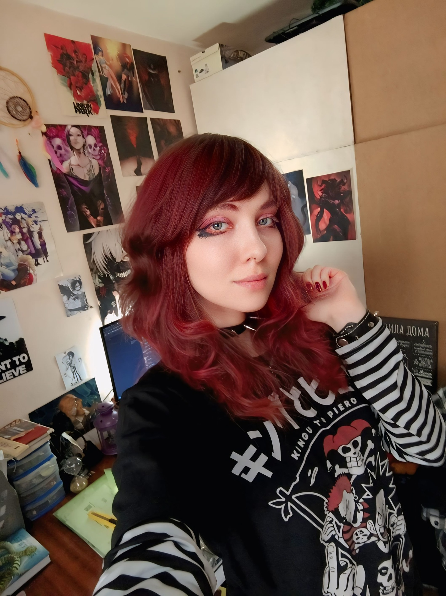
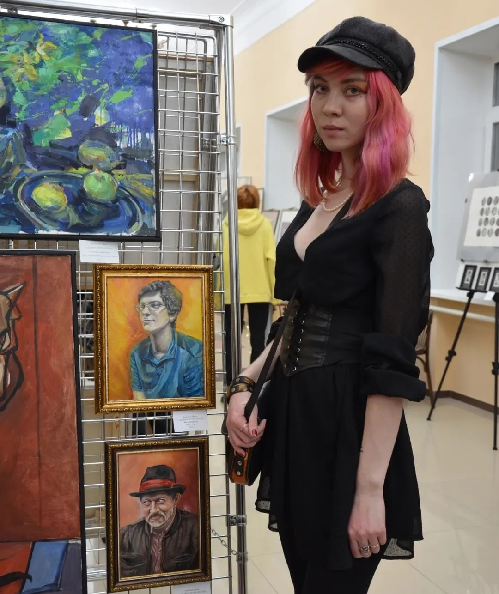
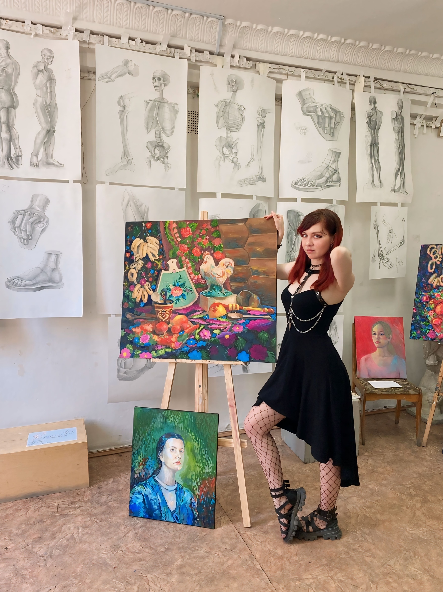
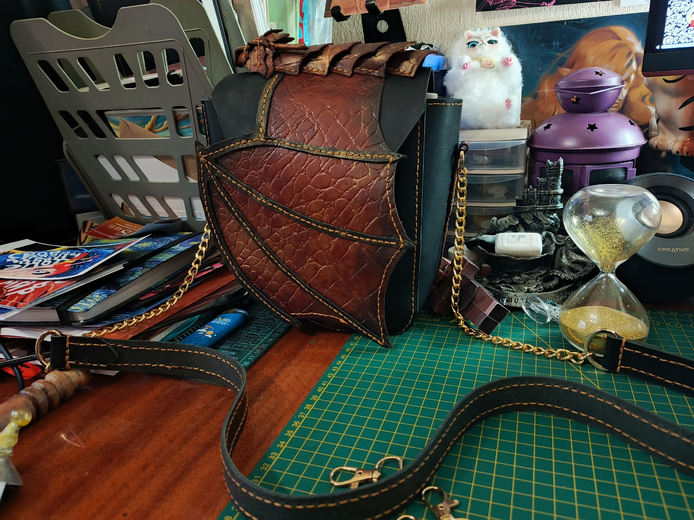

На главную
Каранина Ирина Дмитриевна

Дата рождения: Апрель 1999
Место рождения: Красноуральск
Подпись: Rina Noise
Страница в интернете: https://vk.com/rinsun2033
Каталог работ
Вынужденные перемены, 2025
Нет тебе прощения!, 2025
Безумная любовь, 2025
Я не хочу вас слушать, 2025
Ты глух. Но мне есть что тебе сказать, 2025
Драконье логово, 2024
Падение в бездну обучения, 2024
Солнце, 2023
Призраки прошлого, 2023
Цветы любви, 2023
Натюрморт с кувшином и фруктами, 2023
Натюрморт с сухой травой, 2023
Начало жизни и судьбы, 2023
Женщина на фоне деревьев, 2023
Парный портрет, 2023
Лягушка, 2023
Деревья, 2023
Крыльцо, 2023
Домик в деревне, 2023
Однажды в солнечный день улыбался ты, 2023
Нет роднее места, 2023
Одиночество, 2023
У дома, 2023
Старый завод, 2023
Дерево, 2023
Два Влюбленных, 2023
Сильнее судьбы, 2023
Взгляд вселенной, 2023
Возлюбленный, 2022
Учитель, 2022
Деревья на фоне неба, 2022
Женщина с синими волосами, 2022
Нелёгкий путь, 2022
Надежда умирает последней, 2022
Цветок, 2022
Дева солнца, 2022
Скованные, 2022
Дочь Солнца, 2022
Усталость, 2022
Скоротечность жизни, 2022
Портрет Натальи Запояско, 2022
Агония, 2022
Два сердца, что удерживаются цепями обстоятельств, 2021
Ворон, 2021
Омут, 2021
Яблочки, 2021
Памятник затопленным кораблям, 2021
Пилигрим, 2021
Портрет Юлии Евдокимовой, 2021
Эскиз открытки к 300-летию Нижнего Тагила, 2021
Автопортрет, 2020
Разочарование, 2020
Разум и чувства, 2020
Страсть, 2020
Судьбоносная встреча, 2020
Сонливость, 2020
Берегите себя и своих близких, 2020
Портрет матери, 2020
Она все ещё хочет быть свободной, но сделает все ради любви, 2020
Цветы на фоне луны, 2019
Портрет одногруппницы, 2019
Гуси-лебеди, 2019
Портрет Дарьи Ступак, 2019
Арка, 2019
Автопортрет, 2019
Стул, 2019
Натюрморт с кувшином и яблоком, 2018
Натюрморт, 2018
Портрет девушки, 2018
Не грусти, скоро взойдет наше солнце, 2018
Розы, 2018
Дракон, 2018
Я - Волк, 2018
Натюрморт с чайником, 2017
Осенняя набережная, 2017
Любовь русалки, 2017
Осень, 2016
Икар и солнце, 2016
Сова, 2016
Фантазия влюблённых, 2015
Влюбленная в небо никогда не упадет на землю камнем, 2015
Орел, 2015
Змея, 2014
Галерея

На выставке

На ярмарке со своими изделиями

На просмотре, 2024

На практике в детском лагере, 2024

Сумка работы Ирины, 2025

На Арт-кластере "Таврида", 2025
См. также
Сгенерировано SmallSoft CatalogTools{kind=link}
{kind=link}
{kind=link}
{kind=link}